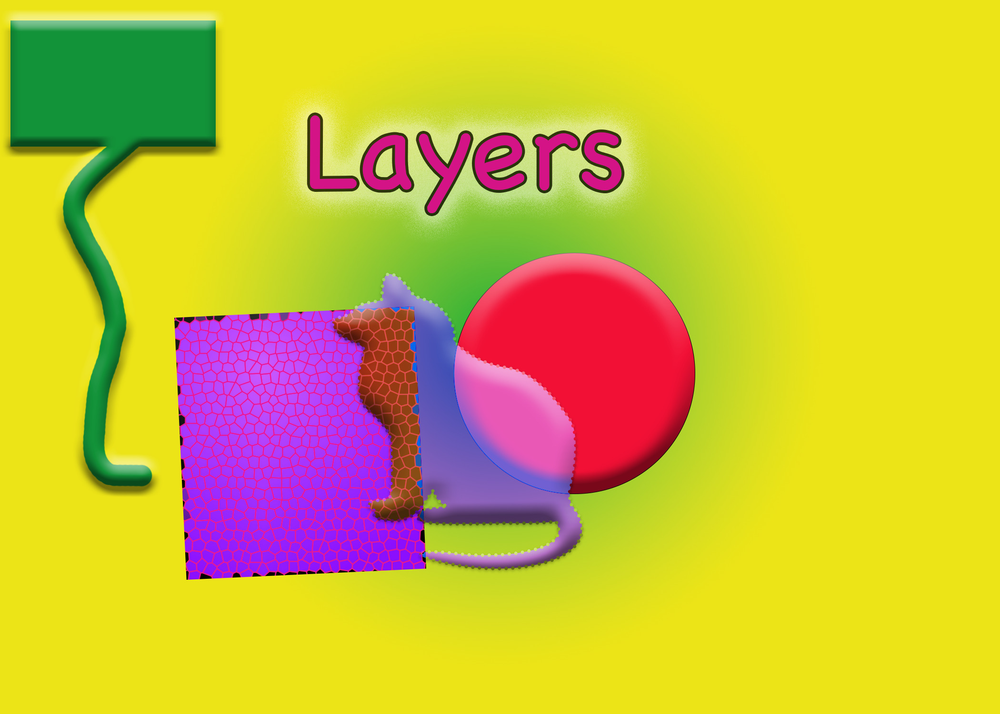
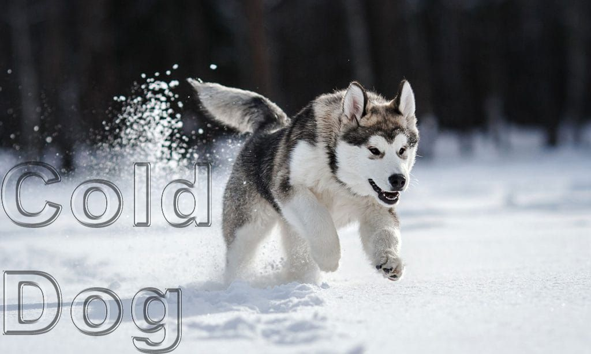
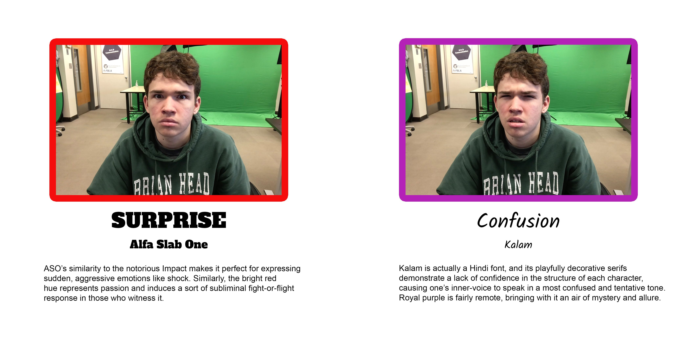
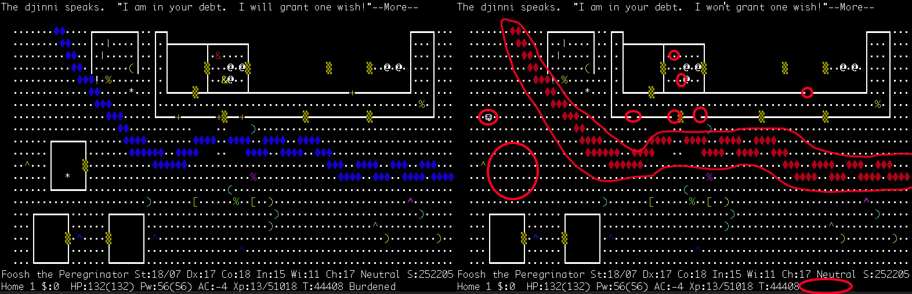
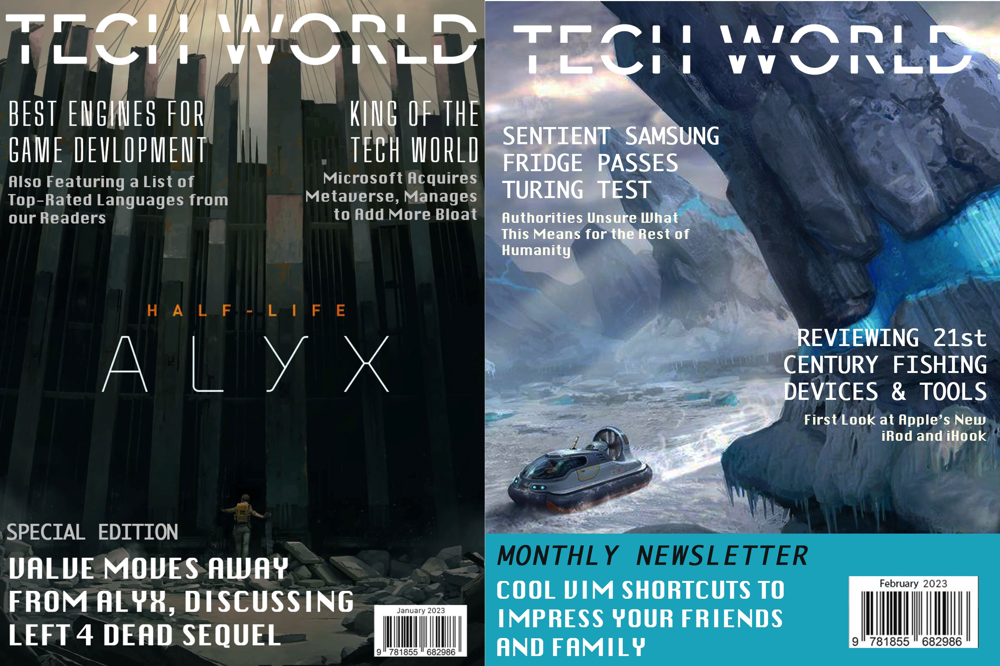

Photoshop Unit
The first unit! Learning how to use Photoshop was the very thing that prompted me to take Digital Media. Adobe Photoshop is a raster graphics editor developed and published by Adobe Inc. for Windows and macOS. It is particularly known for its extensive arsenal of image-editing tools and extensions. This unit played an important role in teaching the basics and preparing me for later software, particularly Illustrator and InDesign.
One of the first Photoshop tutorial projects. Taught the basics of image layers and effects.
An open-ended text tutorial assignment. I couldn't think of anything for the title.

The second Photoshop project. The melon head on the left is the one we were required to recreate, but the one on the right is my own handiwork!
This was a very unique assignment from the Design sub-unit. If I remember correctly, we were supposed to find two fonts and try to match the emotions they gave off.
The idea was to create one of those puzzles where you're supposed to find the differences between two images. The image in question is actually a screenshot from the dungeon-crawler Rogue.
I recreated a professional magazine cover and swapped the guy on the cover with a cutout of some girl. I don't remember why the title looks so distorted.
I'm quite proud of how these turned out. I probably could've put a bit more care into the font choices, but other than that they aren't too shabby.